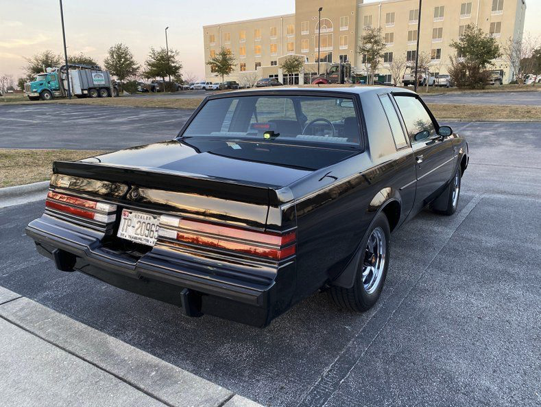

The Begin...
To talk of the 1987 Buick GNX one has to first go back to 1982 with the launch of the Buick Regal Grand National. It was, after all the Grand National that quickly boosted Buick’s reputation for providing performance-oriented turbo-charged cars. The Grand National also brought Buick the Manufacturer’s Trophy in the 1981 NASCAR Winston Cup Grand National Series. The GNX was introduced in 1987 as a limited-edition, higher-performance edition of the Buick Grand National. Buick produced 547 GNX models in 1987, a small number compared to the 20,193 Grand Nationals produced that same year. The GNX was produced in cooperation with McLaren Engines and ASC Incorporated.
Engine
The GNX featured modifications of the turbo-charged and intercooled 3.8-liter V6 engine used in the Grand National, as well as special wheels and tires, suspension and exhaust system modifications, analog instrument cluster and functional body modifications. The GNX was the quickest American car you could buy in 1987. It recorded a 0-60 time of 4.7 seconds. The GNX was the ultimate expression of the T-Types.
Style
T-Type cars were built as performance-oriented versions of popular Buick models. The first Buick to receive the T-Type designation was the 1981 Rivera. Buick extended the T-Type package across several nameplates, including Skyhawk, Century, Regal, LaSabre, Electra and Riviera. The interiors of T-Type cars differed from most other Buicks in that the front seats were almost always bucket seats, and the shifter was mounted in the center console, except the 1981-85 Rivieras which had the buckets and a consolette but a column shifter. The “T-Top” roof was another noteworthy feature of T-Type models. The T-Type logo consisted of a large red letter “T”, and the word “Type” in small black or white letters. The emblems were only placed on the fenders and on some later models (1986) a grille emblem was used.
After the legend
While the T-Type designation slowly faded by 1990, Buick’s commitment to turbo-charged performance cars did not. The 2015 Regal luxury performance car comes equipped with a 259-hp turbocharged engine mated to a 6 speed transmission, either automatic or manual. Available All-Wheel Drive offers sure-footed control so you can thoroughly enjoy every twist and turn of the road. And drivers can switch between three exciting driving modes with Interactive Drive Control. The Regal GS offers classic design details like chrome accents and dual stainless-steel exhaust tips add a confident flair, while the newly designed headlamps and tail lamps leave a lasting impression, coming and going. And the “T” designation on turbo-charged models is a well-deserved nod to the high-performance predecessors of past Regals.